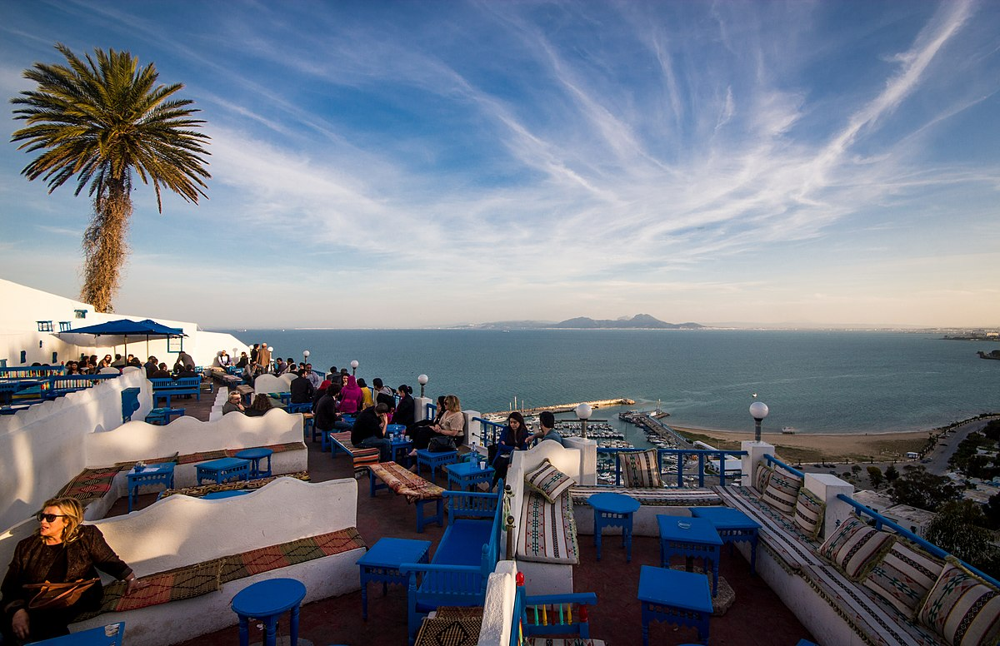
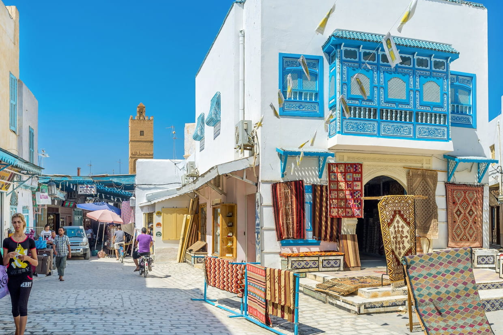
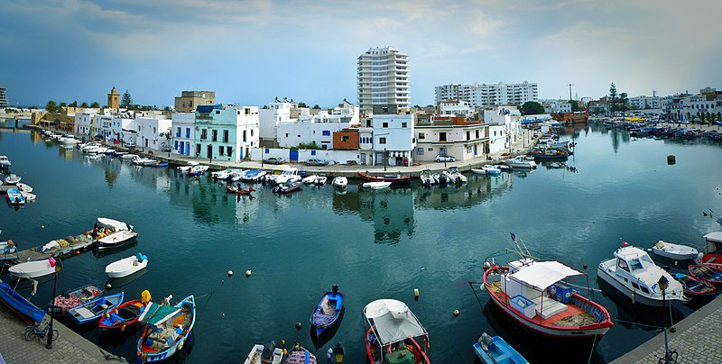

Les Traditions
Découvrez la richesse des traditions tunisiennes.
Les Traditions Tunisiennes
Découvrez la richesse des traditions tunisiennes, un mélange fascinant de culture arabe, berbère et méditerranéenne.
Cuisine Tunisienne
La cuisine tunisienne est variée et savoureuse. Ne manquez pas des plats comme le couscous, les bricks, et le tajine tunisien. Cliquez sur le plat pour en savoir plus !
Couscous
Brik
Les Festivals Tunisiens
Les festivals tunisiens, comme le Festival de Carthage, mettent en avant la musique, le cinéma et les arts traditionnels.
Festival de Carthage
Un festival de musique et de cinéma qui attire des artistes internationaux et locaux.
Festival de Djerba
Un événement culturel majeur célébrant les arts et la musique traditionnelle.
Musique et Danse Traditionnelles
La musique "Mezoued" et la danse "Raqs" sont des expressions culturelles vibrantes du patrimoine tunisien. Écoutez un extrait de musique Mezoued ci-dessous.
Arts et Artisanat
Les tapis, la poterie, et l'art de la broderie témoignent du savoir-faire unique des artisans tunisiens.
Tapis Traditionnels
Poterie Tunisienne
Récits Culturels
Explorez les récits qui forment notre identité collective.
Savoir-Faire
Connectez-vous avec les savoir-faire tunisiens.
Les Meilleures Places à Visiter en Tunisie
1. Dougga

Site archéologique classé au patrimoine mondial de l'UNESCO, Dougga est un incontournable pour les amateurs d'histoire.
2. Djerba

Connue pour ses plages de sable blanc et ses maisons typiques, Djerba est une destination de rêve.
3. Carthage

Ancienne cité commerciale, Carthage est riche en histoire et en monuments à découvrir.
4. Sidi Bou Saïd
Ce charmant village est célèbre pour ses maisons blanches et bleues et ses vues imprenables sur la mer.
5. Kairouan
Kairouan est une ville sainte de l'Islam, connue pour sa grande mosquée et son riche patrimoine culturel.
6. Bizerte
Cette ville côtière est célèbre pour son port et ses monuments historiques.